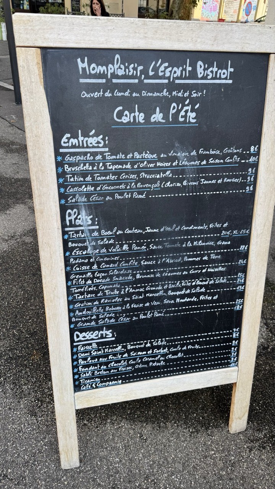
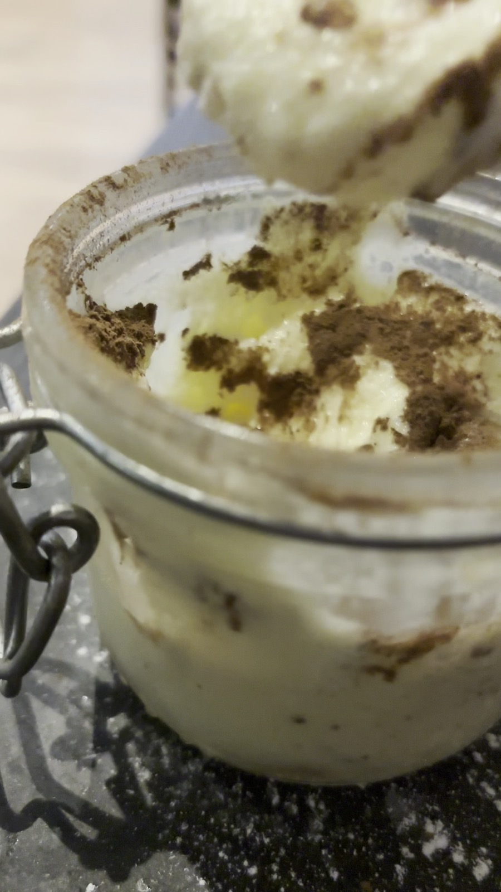
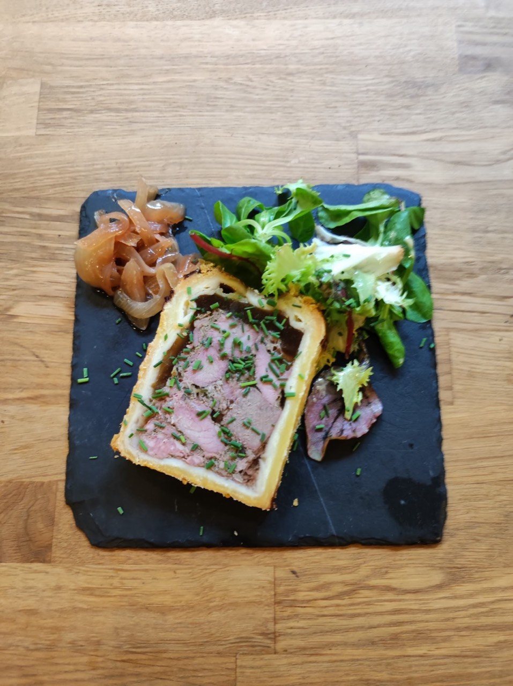
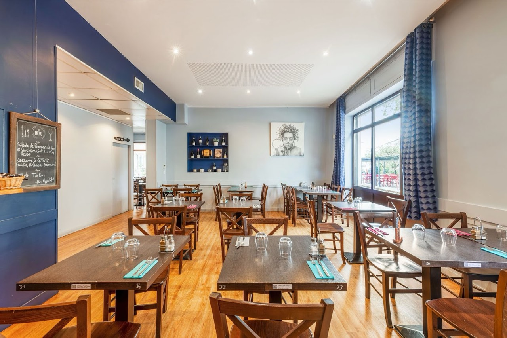
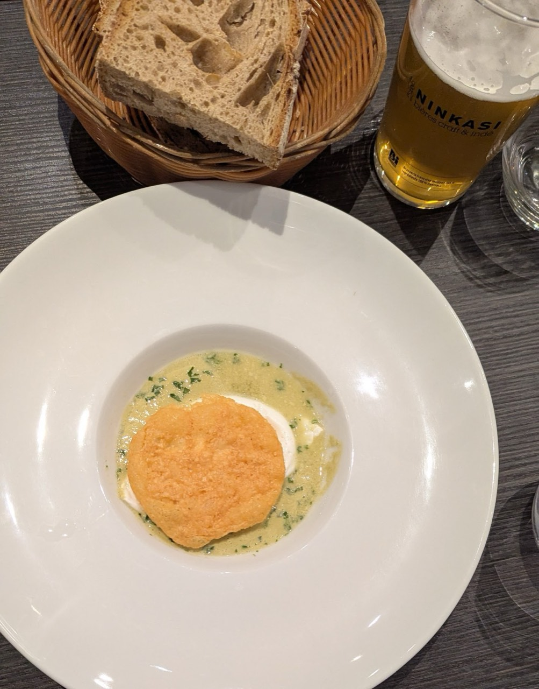
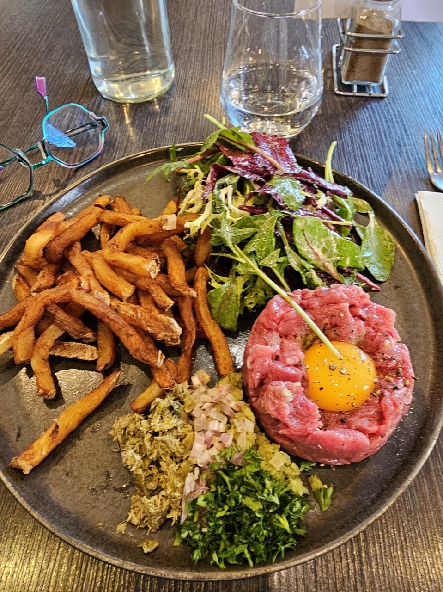
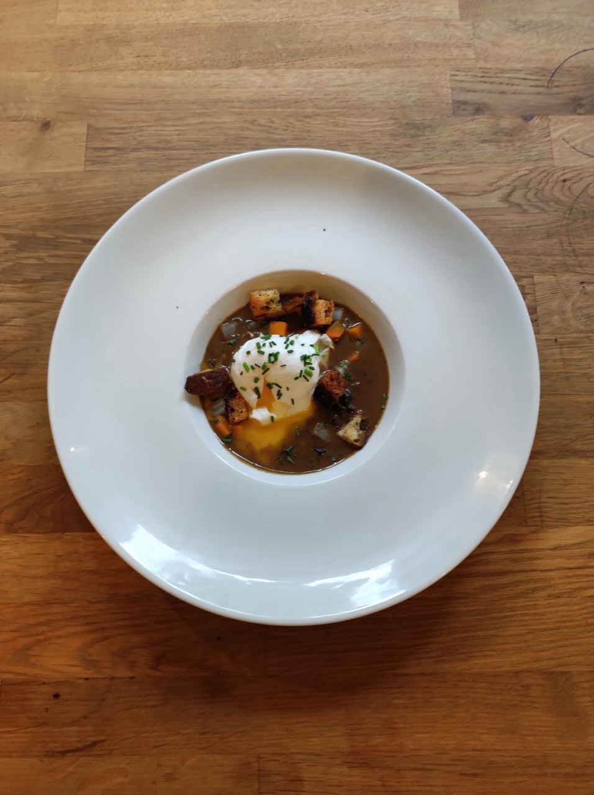
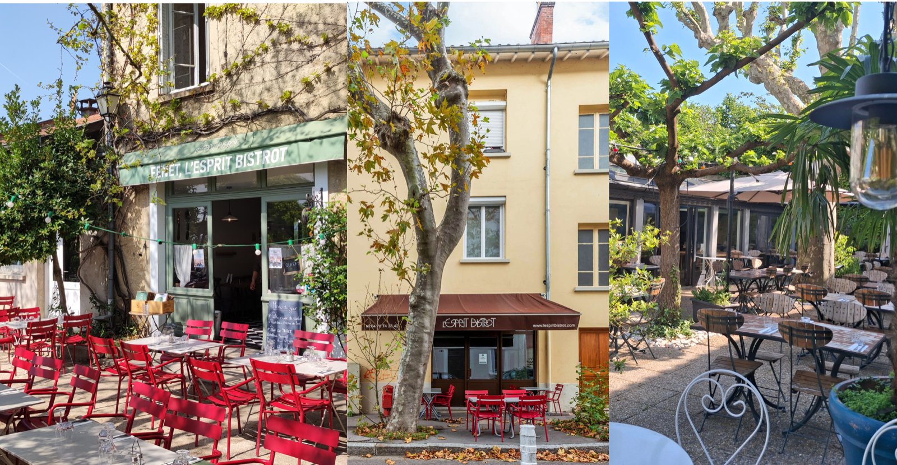

Restaurant · Lyon 8e
L'Esprit Bistrot
Nos Restaurants sont ouverts 7 j/7 Midi & Soir, toute l’année même le Dimanche et les jours fériés !
Le temps d’une soirée professionnelle ou d’un déjeuner familial le week-end, nous mettons nos espaces à votre disposition. Si vous êtes très nombreux, les bistrots pourront être privatisés pour vous ! Nous vous proposons différentes formules (repas assis ou cocktail debout)
- Cuisine française
- Terrasse
- Réservation conseillée
- 4,0 ★ sur Google (823 avis)

En images







Nous trouver
13 Rue Berchet, 69008 Lyon
| Lun-Dim | 12:00-14:00 · 19:30-22:00 |